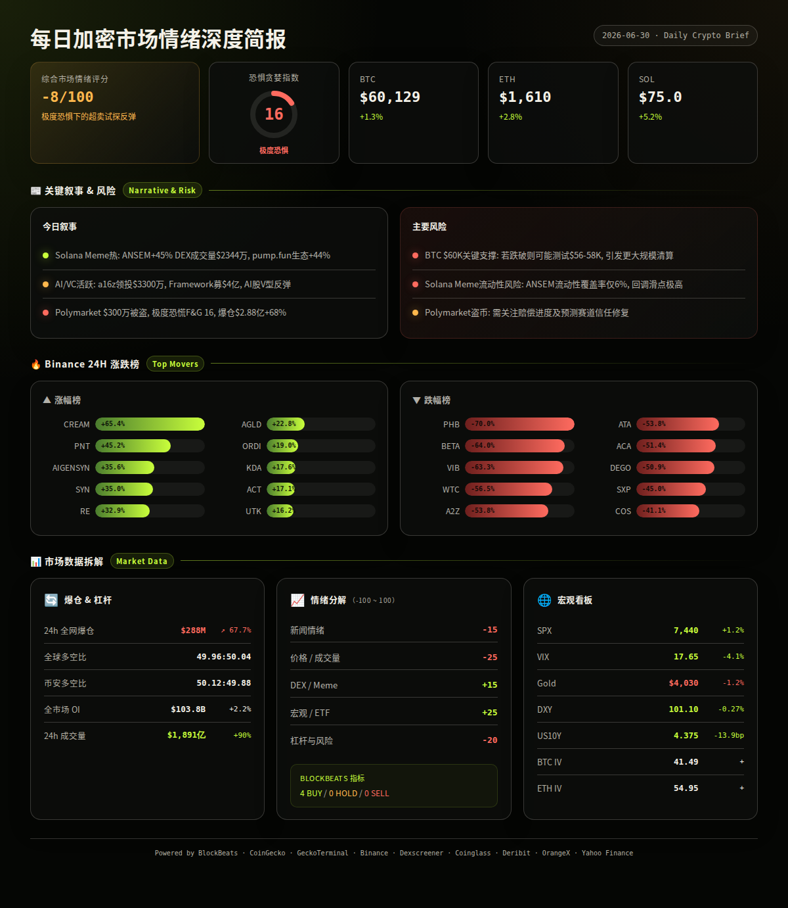
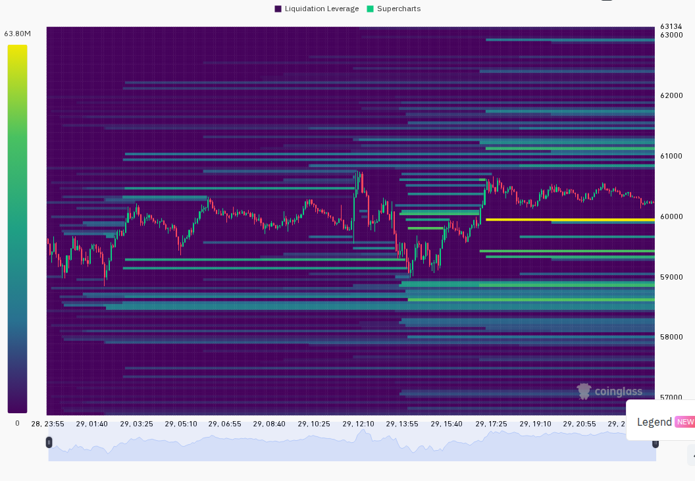
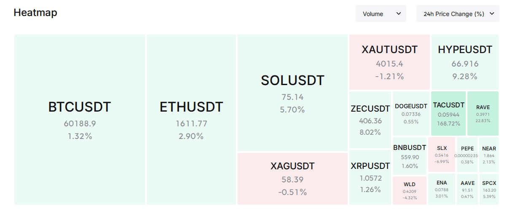

恐惧恐慌下的脆弱反弹：BTC坚守6万、ANSEM引领Solana Meme潮、爆仓激增68%
市场处于极度恐慌（F&G 16），但BTC在$60,000关口获得支撑并小幅反弹，Solana生态ANSEM以+45%领涨DEX，衍生品爆仓激增至$2.88亿暗示短期清洗仍在进行中（analysis）
━━━━━━━━━━━━━━━━━━━━━━
⏰ 1. 24小时变化:
恐惧与贪婪指数 16 · 极度恐惧
BTC $60,129 · +1.3%
ETH $1,610 · +2.8%
SOL $75.0 · +5.2%
VIX 17.65 · -4.1% · 正常区间
成交量 $1,891亿 · +90%
DXY 101.10 · -0.27
爆仓 $2.88亿 · +67.7%
━━━━━━━━━━━━━━━━━━━━━━
过去24小时宏观与加密市场呈现"恐惧中试探性修复"格局：SPX再创新高、VIX回落至正常区间，给风险资产提供温和背景；但加密内部Polymarket遭黑客攻击、伊朗局势升温、爆仓激增等负面信号压制了反弹信心。Solana链上Meme币情绪高涨，ANSEM成为最强共识标的。
—— BTC / ETH / SOL ——
三大主力温和反弹，但力度有限，尚未改变整体弱势结构。
信息 1
BTC在$60,000关口获得技术支撑，24h小幅反弹+1.3%，成交量放大，但资金费率中性（Binance 0.0067%，Bybit 0.01%），未见强势多头进场信号。 (CoinGecko, BlockBeats)
信息 2
ETH反弹+2.8%至$1,610，ETH-BTC IV差值13.5个百分点，低于15%的"山寨投机溢价"阈值，表明市场对以太坊及山寨季的预期仍然偏冷。 (Deribit, CoinGecko)
信息 3
SOL领涨三大主力+5.2%，Solana链上DEX交易量活跃，ANSEM/SOL交易对24h成交量$2,344万，pump.fun生态类别市值+44.1%领涨所有CoinGecko板块。 (CoinGecko, GeckoTerminal)
—— 宏观 / 地缘政治 ——
宏观面整体偏暖，但地缘政治存在零星扰动。
信息 4
S&P 500再创历史新高收于7,440点，24h +1.18%，5日累计+1.02%。VIX回落至17.65，属于正常区间（15-20），显示美股投资者情绪稳定。 (Yahoo Finance)
信息 5
DXY美元指数报101.10，24h -0.27%，7日+0.10%基本持平。美国10年期国债收益率报4.375%，7日下行13.9bp，宏观流动性环境对风险资产偏友好。 (BlockBeats)
信息 6
伊朗方面连续发声：当前重点是落实核协议，近期不会与美国进行谈判；同时警告法国不要干涉霍尔木兹海峡局势。中东地缘风险溢价小幅升高但尚未触发市场恐慌。 (BlockBeats)
—— AI / 半导体叙事 ——
AI叙事在美股和加密市场同步回温。
信息 7
AI股票经历V型反弹，多数AI个股在日内低开后收复早盘跌幅。亚马逊因成本飙升重新谈判与Anthropic的合作协议，同时探索其他AI模型。 (BlockBeats)
信息 8
a16z Crypto领投Ornn $3,300万种子轮，Framework Ventures完成$4亿第四期基金募资（投向前沿科技），AI+Web3基础设施开发商Canopy完成$850万种子轮。VC资金继续涌入AI与加密交叉赛道。 (BlockBeats)
信息 9
高盛美股负责人访谈：美股牛市还能走多远？花旗分析看多标普至8,100点。机构对AI驱动的美股牛市持续性存在分歧。 (BlockBeats)
—— 值得关注的标的 ——
Binance 涨幅榜 (USDT):
· CREAM: +65.4%
· PNT: +45.2%
· AIGENSYN: +35.6%
· SYN: +35.0%
· RE: +32.9%
· AGLD: +22.8%
· ORDI: +19.0%
· KDA: +17.6%
· ACT: +17.1%
· UTK: +16.2%
跌幅榜:
· PHB: -70.0%
· BETA: -64.0%
· VIB: -63.3%
· WTC: -56.5%
· A2Z: -53.8%
· ATA: -53.8%
· ACA: -51.4%
· DEGO: -50.9%
· SXP: -45.0%
· COS: -41.1%
—— 融资 / VC ——
信息 10
Framework Ventures完成$4亿第四期基金募集，投向"前沿科技"领域，显示顶级加密VC仍在积极部署资金。 (BlockBeats)
信息 11
a16z Crypto领投的Ornn完成$3,300万种子轮融资。区块链数据基础设施商Cambrian完成$600万融资，Franklin Templeton与Polychain联合领投。Metal完成种子轮，Airwallex与Capital49共同领投。 (BlockBeats)
信息 12
Polymarket遭受第三方供应商漏洞攻击，约$300万被盗，平台承诺全额赔偿用户。这是继此前多起DeFi安全事件后的又一次基础设施层面攻击，不影响核心市场功能但短期对预测市场赛道信心有冲击。 (BlockBeats)
—— X/Twitter KOL 信号 ——
信息 13
过去24h Tin的3个X List共采集557条推文，ANSEM以11次提及（5人）成为最受关注的代币且情绪偏多，ORDI以3次提及（3人）次之。AI/Agent叙事占74条（13%），连续多日保持高位，说明该叙事不是单日事件而是可跟踪的市场主题。 (X Lists, analysis)
信息 14
X热议的代币与Binance涨幅榜形成交叉验证：ORDI在X被讨论（3人/偏多）同时Binance +19.0%进入涨幅榜，ANSEM在X 11次提及+五人多头对应Solana DEX $2,344万成交量+45%涨幅，X信号与链上数据高度一致。 (X Lists, multi-source, analysis)
━━━━━━━━━━━━━━━━━━━━━━
风险 1
Polymarket被盗事件可能引发预测市场赛道的短期信任危机和监管关注
观察：Polymarket官方回应与赔偿进度、其他预测市场平台是否有类似漏洞被披露
失效条件：48小时内完成赔偿方案公布且无新漏洞出现 (BlockBeats)
──────────────────────
风险 2
衍生品市场爆仓$2.88亿（+67.7%），多空比接近50:50，场内存量资金处于"无方向博弈"状态，任何单边突破都可能引发更大规模清算
观察：BTC能否站稳$60,000以上超过48小时、OI是否继续增长、长线持仓占比变化
失效条件：BTC放量突破$62,000且OI温和增长、清算量明显回落 (Coinglass, Binance, analysis)
──────────────────────
风险 3
Solana Meme币情绪过热：ANSEM +45%、TATE +253%、BULLWIF +812%，高涨幅伴随高波动，部分标的流动性不足
观察：ANSEM/SOL池流动性$141万对应$2,344万成交量（流动性/成交量比仅6%），回调时滑点风险极高
失效条件：流动性持续增长+持仓地址增加+成交量平稳而非脉冲式 (GeckoTerminal, Dexscreener)
非财务建议声明: 本报告仅提供市场数据和情绪分析，不构成任何买卖建议。
━━━━━━━━━━━━━━━━━━━━━━
· 6月30日-7月1日 — Polymarket 2026世界杯小组赛多场进行中（英格兰vs巴拿马、葡萄牙vs乌兹别克斯坦等）— 短期吸引投机资金流入预测市场赛道 (BlockBeats)
· 6月30日 — Chainalysis发布区块链追踪标准草案 — 合规基础设施进展，长期利好机构入场 (BlockBeats)
· 本周 — 伊朗核协议外交动向持续 — 地缘风险溢价可能随消息面波动 (BlockBeats)
━━━━━━━━━━━━━━━━━━━━━━
综合评分: -8/100 (极度恐惧但超卖反弹信号初现)
5 个维度:
新闻情绪: -15/100 — 极度恐惧（F&G 16）主导市场心理，Polymarket被盗约$300万冲击预测赛道信心，伊朗局势提供地缘风险背景。但BB Bottom/Top Indicator显示整体市场流动性、BTC流动性、ETH流动性均处于"Buy"区间（小于20的潜在买入机会），表明技术指标与情绪指标出现背离。 (BlockBeats, OrangeX, analysis)
价格/成交量: -25/100 — BTC仅反弹+1.3%力度偏弱，ETH +2.8%，SOL +5.2%相对较强但远未收复前期跌幅。成交量$1,891亿（+90%）大量来自爆仓清算而非主动买入，资金费率中性未见激进多头。CoinGecko板块中Pump.fun Creator +44.1%和Tokenized Pre-IPO +42.5%领涨，但Time.fun -38.3%和Tokenized rStocks -23.5%领跌，分化严重。 (CoinGecko, Coinglass, Binance)
DEX/meme 活跃度: +15/100 — Solana链上Meme活跃度显著回升：ANSEM/SOL $2,344万成交量+45.3%，BULLWIF +812%，CATWIF +184%，TATE +253%。但多数高涨幅代币流动性仅$10-18万级别，极端波动风险高。48h内无符合$50k流动性+$100k成交量标准的新池出现，说明增量资金有限，存量博弈特征明显。 (GeckoTerminal)
宏观/ETF/流动性: +25/100 — 美股SPX创新高7,440（+1.18%），VIX 17.65处于正常区间，DXY -0.27%，US10Y 7日下行13.9bp至4.375%。Gold -1.2%至$4,030。VC资金活跃（Framework $4亿、a16z领投$3,300万种子轮）。宏观环境整体对风险资产友好，但加密内部受自身结构性因素拖累未充分反映宏观利好。 (Yahoo Finance, BlockBeats)
杠杆与风险: -20/100 — 24h爆仓$2.88亿（+67.7%）显著高于近期均值，多空比全球49.96:50.04、Binance TV 50.12:49.88几乎完全均衡。OI $1,038亿（+2.16%），BTC永续资金费率Binance 0.0067%/Bybit 0.01%中性偏正。ANSEM资金费率在部分小所出现负值（Aster -0.79%、BingX -1.4%），暗示空头集中。ETH-BTC IV差仅13.5pp，低于15pp的altcoin投机溢价阈值。 (Coinglass, CoinGecko Derivatives, Deribit)
BlockBeats Bottom/Top Indicator: 4 Buy / 0 Hold / 0 Sell
· 整体市场流动性指数: Buy（砸盘成本高，易成底部）
· 比特币流动性指数: Buy（LIQ>3，砸盘成本高）
· 以太坊流动性指数: Buy（LIQ>3，砸盘成本高）
· 过去24h累积比特币流动性指数: Buy（24h LIQ总和>60）


以下为基于多源数据交叉验证的概率情景分析：
情景 1 (概率: 45%, 置信度: 中):
短期超卖技术反弹延续 — BTC在$60,000支撑获得确认后向$62,000-63,000区间试探，SOL继续跑赢大盘，Meme币情绪维持活跃
关键条件: SPX不出现-1.5%以上回调、DXY不破102、BTC永续资金费率维持正值、无新增大规模安全事件
若发生则BTC目标$62,000-63,000，SOL $78-82，ANSEM市值冲击$5,000-6,000万 (multi-source, analysis)
情景 2 (概率: 35%, 置信度: 中):
横盘整理消化爆仓 — BTC在$59,000-61,000窄幅震荡，多空博弈持续，Meme币出现轮动但无新主线
关键条件: 成交量萎缩、OI不增反降、F&G维持在15-25区间
若发生则BTC维持在$59,000-61,000，SOL $72-77，山寨币分化加剧 (multi-source, analysis)
情景 3 (概率: 20%, 置信度: 低):
二次探底 — Polymarket盗币事件扩散、伊朗局势升级或美股回调导致风险偏好骤降，BTC跌破$58,000支撑
关键条件: 新增DeFi/CEX安全漏洞披露、VIX突破22、稳定币市值收缩
若发生则BTC可能测试$56,000-58,000，SOL回落至$68-70，杠杆多头面临大规模清算 (multi-source, analysis)
━━━━━━━━━━━━━━━━━━━━━━
· BTC: $60,129, 24h +1.3%, 成交量$137亿（Binance Futures）, 高低区间$59,421-$60,348。日线在$60,000整数关口形成小阳线，但成交量未显著放大，短期均线空头排列仍未逆转。 (CoinGecko, Binance)
· ETH: $1,610, 24h +2.8%, 成交量$89亿（Binance Futures）, 高低区间$1,562-$1,615。涨幅略优于BTC但ETH-BTC比率仍在0.0268附近低位徘徊，山寨季信号尚未出现。 (CoinGecko, Binance)
· SOL: $75.0, 24h +5.2%, 成交量$27亿（Binance Futures）, 高低区间$70.9-$75.3。三大主力中反弹力度最大，受益于Solana链上Meme情绪回升。 (CoinGecko, Binance)
· 全球总市值: $2.17万亿，24h成交量$840亿，BTC占比55.6%，ETH占比9.0%。 (CoinGecko)
· 爆仓数据: 24h全网爆仓$2.88亿（+67.7%），其中多单爆仓占约$1.44亿，空单爆仓占约$1.44亿，多空双杀格局。 (Coinglass)
· OI 与成交量: 全球OI $1,038亿（+2.16%），Binance OI $172亿（6月28日数据），Bybit OI $86亿，Hyperliquid OI $60亿。成交量$1,891亿（+90.18%）显著高于近期均值，主要由爆仓清算驱动。 (Coinglass, BlockBeats)
· 宏观看板: SPX 7,440（+1.18%）/ VIX 17.65（-4.1%，正常区间）/ DXY 101.10（-0.27%）/ US10Y 4.375%（7日-13.9bp）/ Gold $4,030（-1.2%）。宏观组合偏风险友好。 (Yahoo Finance, BlockBeats)
· 期权波动率: BTC ATM IV 41.49%（正常区间40-60%），ETH ATM IV 54.95%（正常区间40-60%），ETH-BTC IV差13.5pp（<15pp，无山寨投机溢价信号）。 (Deribit)
以下基于CoinGecko trending + DEX 数据交叉验证：
ANSEM (Solana):
价格$0.1289, 24h +45.3%, 市值$5,586万（GeckoTerminal $1.35亿 FDV）。
DEX: 流动性$141万, 24h成交量$2,344万, 买卖比58,363:45,809（1.27:1）。
催化剂: X List 11次提及/5人偏多，Solana链上净流入$57.2万排名第一，pump.fun生态整体+44.1%领涨。KOL共识+链上数据+价格形成三重验证。
风险: 流动性仅$141万支撑$2,344万成交量（流动性覆盖率仅6%），资金费率在小所出现负值（Aster -0.79%、BingX -1.4%）暗示有做空力量堆积；Meme币属性波动极大。 (GeckoTerminal, BlockBeats, X Lists, CoinGecko Derivatives)
ORDI (Bitcoin):
价格$X（见Binance +19.0%涨幅）, 24h +19.0%, 市值需补充。
DEX: Dexscreener 未检索到可靠 DEX 数据（ORDI主要交易集中在CEX）。
催化剂: X List 3次提及/3人偏多，Binance涨幅榜第7位。BTC生态代币在BTC反弹时通常有杠杆效应，多人讨论说明关注度回升。
风险: CEX主导的代币流动性集中在Binance，链上数据有限；需确认是资金轮动还是短期炒作。 (Binance, X Lists, analysis)
SYN (Multi-chain):
价格$X（Binance +35.0%涨幅）, 24h +35.0%, 市值排名#245。
催化剂: CoinGecko trending #5，Binance +35.0%涨幅第4位，Synapse是跨链桥赛道代表项目。Binance永续资金费率高达0.0216，显示多空博弈激烈。
风险: 资金费率极高（2.16%），多头持仓成本大；涨幅过快后容易出现获利回吐。 (CoinGecko, Binance)
━━━━━━━━━━━━━━━━━━━━━━
· GeckoTerminal Solana trending pools (24h 成交量 > $1M):
1. ANSEM / SOL: 成交量$2,344万, +45.3%, 流动性$141万 (GeckoTerminal)
2. TATE / SOL: 成交量$256万, +252.6%, 流动性$9.6万 (GeckoTerminal)
3. CARDS / USDC: 成交量$646万, -10.0%, 流动性$346万 (GeckoTerminal)
· BlockBeats Solana top10_netflow:
1. ANSEM: 净流入$57.2万, 市值$3,557万, 成交量$6,848万 (BlockBeats)
2. SYRUPUSDC: 净流入$53.7万, 市值$12.9亿 (BlockBeats)
3. CARDS: 净流入$18.8万, 市值$6,498万, 成交量$814万 (BlockBeats)
4. FARTCOIN: 净流入$13.1万, 市值$1.31亿 (BlockBeats)
· 备注:
Solana链上热点高度集中在ANSEM单一标的（成交量$2,344万占trending pools头部），其余Meme币（TATE、BULLWIF、CATWIF等）虽涨幅惊人但流动性极薄（$1-10万级别），参与风险极高。ORDI在X信号与Binance涨幅榜形成交叉验证，但缺乏DEX链上数据支撑分析。整体来看当前市场处于"极度恐慌+超卖反弹"的矛盾状态，链上Meme资金属于短期投机性质，趋势性反转信号尚未出现。 (multi-source, analysis)